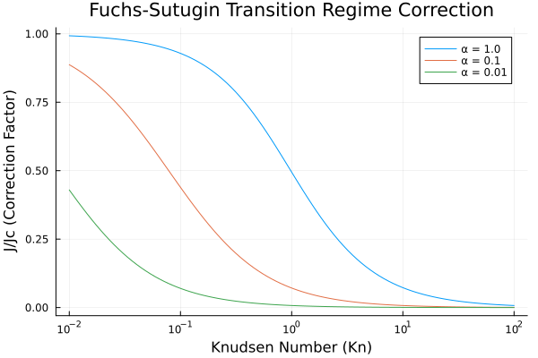
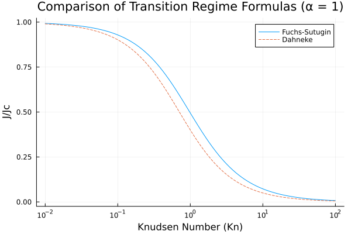
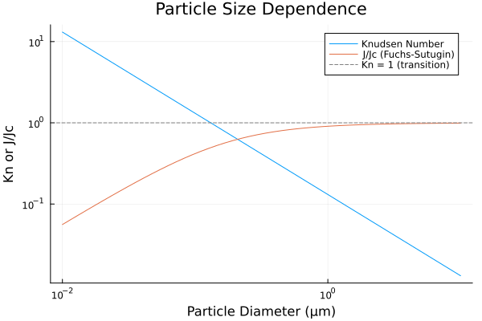

Mass Transfer to Atmospheric Particles
Overview
This module implements the fundamental equations describing mass transfer between gas and particle phases in the atmosphere. The treatment covers three transport regimes based on the Knudsen number (Kn = λ/Rp, ratio of mean free path to particle radius):
- Continuum regime (Kn ≪ 1): Applicable to large particles where Fick's law of diffusion governs transport
- Kinetic regime (Kn ≫ 1): Applicable to small particles where molecular kinetic theory governs transport
- Transition regime (Kn ~ 1): Requires interpolation formulas bridging the two limiting cases
The implementation includes:
- Transition regime correction factors (Fuchs-Sutugin, Dahneke)
- Maxwellian flux for particle growth/evaporation
- Mass transfer coefficients for gas-particle exchange
- Characteristic timescales for various mass transport processes
- Aqueous-phase chemistry and mass transport coupling
Reference: Seinfeld, J.H. and Pandis, S.N. (2006) "Atmospheric Chemistry and Physics: From Air Pollution to Climate Change", 2nd Edition, John Wiley & Sons, Chapter 12, pp. 537-587.
Aerosol.MassTransfer — Function
MassTransfer(; name=:MassTransfer)Complete mass transfer model combining transition regime correction, gas-phase diffusion, and interfacial transport.
This component provides the transition-regime corrected mass flux for particle growth/evaporation, applicable across all Knudsen numbers.
Reference: Seinfeld & Pandis (2006) Chapter 12, Sections 12.1.1-12.1.4
Aerosol.FuchsSutugin — Function
FuchsSutugin(; name=:FuchsSutugin)Fuchs-Sutugin transition regime correction for mass transfer.
This is the most widely used formula for transition regime mass transfer due to its simplicity and accuracy across the full Knudsen number range.
Returns the ratio J/Jc where Jc is the continuum regime flux.
Reference: Seinfeld & Pandis (2006) Chapter 12, Eq. 12.43 (with accommodation coefficient)
Aerosol.Dahneke — Function
Dahneke(; name=:Dahneke)Dahneke transition regime correction for mass transfer.
An alternative interpolation formula for the transition regime.
Reference: Seinfeld & Pandis (2006) Chapter 12, Eq. 12.42
Aerosol.MaxwellianFlux — Function
MaxwellianFlux(; name=:MaxwellianFlux)Calculate the Maxwellian (continuum regime) molar flux to a particle.
This is the steady-state diffusive flux in the continuum regime (Kn ≪ 1).
Reference: Seinfeld & Pandis (2006) Chapter 12, Eq. 12.12
Aerosol.MassTransferCoefficient — Function
MassTransferCoefficient(; name=:MassTransferCoefficient)Calculate the combined gas-phase and interfacial mass transfer coefficient.
This coefficient accounts for both gas-phase diffusion and interfacial resistance to mass transfer.
Reference: Seinfeld & Pandis (2006) Chapter 12, Eq. 12.116
Aerosol.UptakeCoefficient — Function
UptakeCoefficient(; name=:UptakeCoefficient)Calculate the uptake coefficient γ for gas-particle mass transfer.
The uptake coefficient is the probability that a molecule striking the particle surface is taken up by the particle.
Reference: Seinfeld & Pandis (2006) Chapter 12, Eq. 12.121
Implementation
Transition Regime Mass Transfer
The Fuchs-Sutugin formula is the most widely used expression for mass transfer across the full range of Knudsen numbers:
using Aerosol
using ModelingToolkit
import ModelingToolkit: mtkcompile
using NonlinearSolve
using Plots
# Create the Fuchs-Sutugin system
sys = FuchsSutugin()
compiled = mtkcompile(sys)
# Calculate correction factor across Knudsen number range
Kn_range = 10 .^ range(-2, 2, length = 100)
f_FS_α1 = Float64[]
f_FS_α01 = Float64[]
f_FS_α001 = Float64[]
for Kn in Kn_range
prob = NonlinearProblem(compiled, Dict(compiled.Kn => Kn, compiled.α => 1.0))
push!(f_FS_α1, solve(prob)[compiled.f_FS])
prob = NonlinearProblem(compiled, Dict(compiled.Kn => Kn, compiled.α => 0.1))
push!(f_FS_α01, solve(prob)[compiled.f_FS])
prob = NonlinearProblem(compiled, Dict(compiled.Kn => Kn, compiled.α => 0.01))
push!(f_FS_α001, solve(prob)[compiled.f_FS])
end
plot(Kn_range, f_FS_α1, label = "α = 1.0", xscale = :log10,
xlabel = "Knudsen Number (Kn)", ylabel = "J/Jc (Correction Factor)",
title = "Fuchs-Sutugin Transition Regime Correction")
plot!(Kn_range, f_FS_α01, label = "α = 0.1")
plot!(Kn_range, f_FS_α001, label = "α = 0.01")
savefig("fuchs_sutugin.svg");
The correction factor approaches 1 in the continuum limit (Kn → 0) and decreases in the kinetic regime (Kn → ∞). Lower accommodation coefficients (α) reduce the mass transfer rate.
State Variables
using DataFrames, Symbolics, DynamicQuantities
sys = MassTransfer()
vars = ModelingToolkit.unknowns(sys)
DataFrame(
:Name => [string(Symbolics.tosymbol(v, escape = false)) for v in vars],
:Units => [string(DynamicQuantities.dimension(ModelingToolkit.get_unit(v)))
for v in vars],
:Description => [ModelingToolkit.getdescription(v) for v in vars]
)| Row | Name | Units | Description |
|---|---|---|---|
| String | String | String | |
| 1 | c_bar | m s⁻¹ | Mean molecular speed |
| 2 | ρ_air | m⁻³ kg | Air density |
| 3 | λ | m | Mean free path |
| 4 | Kn | Knudsen number (dimensionless) | |
| 5 | f_FS | Fuchs-Sutugin correction factor (dimensionless) | |
| 6 | J_c | s⁻¹ mol | Continuum regime molar flow rate |
| 7 | J | s⁻¹ mol | Transition regime corrected molar flow rate |
Parameters
params = ModelingToolkit.parameters(sys)
DataFrame(
:Name => [string(Symbolics.tosymbol(p, escape = false)) for p in params],
:Units => [string(DynamicQuantities.dimension(ModelingToolkit.get_unit(p)))
for p in params],
:Description => [ModelingToolkit.getdescription(p) for p in params]
)| Row | Name | Units | Description |
|---|---|---|---|
| String | String | String | |
| 1 | μ | m⁻¹ kg s⁻¹ | Dynamic viscosity of air |
| 2 | N_Av | mol⁻¹ | Avogadro's number |
| 3 | M_air | kg mol⁻¹ | Molecular weight of air |
| 4 | c_inf | m⁻³ mol | Bulk gas-phase concentration |
| 5 | T | K | Temperature |
| 6 | α | Accommodation coefficient (dimensionless) | |
| 7 | M_A | kg mol⁻¹ | Molecular weight of species A |
| 8 | P | m⁻¹ kg s⁻² | Pressure |
| 9 | D_g | m² s⁻¹ | Gas-phase diffusivity |
| 10 | k_B | m² kg s⁻² K⁻¹ | Boltzmann constant |
| 11 | R | m² kg s⁻² K⁻¹ mol⁻¹ | Universal gas constant |
| 12 | c_s | m⁻³ mol | Surface concentration |
| 13 | R_p | m | Particle radius |
Equations
equations(sys)\[ \begin{align} \mathtt{c\_bar}\left( t \right) &= \sqrt{\frac{8 \mathtt{N\_Av} T \mathtt{k\_B}}{\pi \mathtt{M\_A}}} \\ \mathtt{\rho\_air}\left( t \right) &= \frac{\mathtt{M\_air} P}{R T} \\ \lambda\left( t \right) &= \frac{2 \mu}{\mathtt{\rho\_air}\left( t \right) \sqrt{\frac{8 R T}{\pi \mathtt{M\_air}}}} \\ \mathtt{Kn}\left( t \right) &= \frac{\lambda\left( t \right)}{\mathtt{R\_p}} \\ \mathtt{f\_FS}\left( t \right) &= \frac{0.75 \left( 1 + \mathtt{Kn}\left( t \right) \right) \alpha}{\mathtt{Kn}\left( t \right) + 0.75 \alpha + \left( \mathtt{Kn}\left( t \right) \right)^{2} + 0.283 \mathtt{Kn}\left( t \right) \alpha} \\ \mathtt{J\_c}\left( t \right) &= 12.566 \mathtt{D\_g} \mathtt{R\_p} \left( \mathtt{c\_inf} - \mathtt{c\_s} \right) \\ J\left( t \right) &= \mathtt{J\_c}\left( t \right) \mathtt{f\_FS}\left( t \right) \end{align} \]
Characteristic Timescales
The module also provides components for calculating characteristic timescales of various mass transport processes:
Aerosol.GasDiffusionTimescale — Function
GasDiffusionTimescale(; name=:GasDiffusionTimescale)Characteristic timescale for gas-phase diffusion to a particle.
This is the time required for a gas-phase concentration perturbation to diffuse to the particle surface.
Reference: Seinfeld & Pandis (2006) Chapter 12, Eq. 12.49
Aerosol.AqueousDiffusionTimescale — Function
AqueousDiffusionTimescale(; name=:AqueousDiffusionTimescale)Characteristic timescale for aqueous-phase diffusion within a droplet.
This is the time for a dissolved species to diffuse throughout the droplet interior.
Reference: Seinfeld & Pandis (2006) Chapter 12, Eq. 12.75
Aerosol.InterfacialTimescale — Function
InterfacialTimescale(; name=:InterfacialTimescale)Characteristic timescale to achieve equilibrium at the gas-particle interface.
For very soluble gases, the timescale is controlled by interfacial transport. For low solubility gases, the timescale is controlled by aqueous diffusion.
Reference: Seinfeld & Pandis (2006) Chapter 12, Eqs. 12.61-12.62
Aerosol.ReactionTimescale — Function
ReactionTimescale(; name=:ReactionTimescale)Characteristic timescale for aqueous-phase chemical reactions.
Reference: Seinfeld & Pandis (2006) Chapter 12, Eqs. 12.76-12.78
Aerosol.SolidEquilibrationTimescale — Function
SolidEquilibrationTimescale(; name=:SolidEquilibrationTimescale)Characteristic timescale for a gas to equilibrate with solid aerosol particles.
Reference: Seinfeld & Pandis (2006) Chapter 12, Eqs. 12.135, 12.139
Aerosol.AqueousEquilibrationTimescale — Function
AqueousEquilibrationTimescale(; name=:AqueousEquilibrationTimescale)Characteristic timescale for a gas to equilibrate with aqueous aerosol particles.
This accounts for the additional buffering effect of Henry's law dissolution.
Reference: Seinfeld & Pandis (2006) Chapter 12, Eq. 12.147
Timescale Comparison
using Aerosol
# Calculate timescales for a 10 μm droplet
sys_dg = GasDiffusionTimescale()
sys_da = AqueousDiffusionTimescale()
compiled_dg = mtkcompile(sys_dg)
compiled_da = mtkcompile(sys_da)
R_p = 1.0e-5 # 10 μm
D_g = 2.0e-5 # m²/s (gas-phase diffusivity)
D_aq = 1.0e-9 # m²/s (aqueous-phase diffusivity)
prob_dg = NonlinearProblem(compiled_dg, Dict(compiled_dg.R_p => R_p, compiled_dg.D_g => D_g))
τ_dg = solve(prob_dg)[compiled_dg.τ_dg]
prob_da = NonlinearProblem(compiled_da, Dict(compiled_da.R_p => R_p, compiled_da.D_aq => D_aq))
τ_da = solve(prob_da)[compiled_da.τ_da]
println("Gas-phase diffusion timescale: $(round(τ_dg * 1e6, digits=2)) μs")
println("Aqueous-phase diffusion timescale: $(round(τ_da * 1e3, digits=2)) ms")
println("Ratio τ_da/τ_dg: $(round(τ_da/τ_dg, digits=0))")Gas-phase diffusion timescale: 1.25 μs
Aqueous-phase diffusion timescale: 10.13 ms
Ratio τ_da/τ_dg: 8106.0Aqueous-Phase Chemistry Coupling
For droplet chemistry applications, the module provides components for mass transport limitations and coupled gas-aqueous dynamics:
Aerosol.AqueousDiffusionReaction — Function
AqueousDiffusionReaction(; name=:AqueousDiffusionReaction)Calculate the correction factor Q for aqueous-phase reaction rate when diffusion within the droplet limits the reaction.
The factor Q accounts for concentration gradients within the droplet due to fast reactions near the surface depleting reactants.
Reference: Seinfeld & Pandis (2006) Chapter 12, Eq. 12.110
Aerosol.MassTransportLimitation — Function
MassTransportLimitation(; name=:MassTransportLimitation)Evaluate mass transport limitation criteria for aqueous-phase chemistry.
Computes the limiting values of k₁H* below which mass transport does not limit the aqueous-phase reaction rate (within 10%).
Reference: Seinfeld & Pandis (2006) Chapter 12, Eqs. 12.85, 12.86, 12.93
Aerosol.DropletMassBalance — Function
DropletMassBalance(; name=:DropletMassBalance)Coupled gas-phase and aqueous-phase mass balance for cloud droplet chemistry.
This model couples:
- Gas-phase partial pressure evolution
- Aqueous-phase concentration evolution
- Mass transfer between phases
- Aqueous-phase chemical reaction
Reference: Seinfeld & Pandis (2006) Chapter 12, Eqs. 12.122-12.123
Mass Transport Limitation Criteria
The following example calculates the limiting reaction rates below which mass transport does not limit aqueous-phase chemistry:
using Aerosol
sys = MassTransportLimitation()
compiled = mtkcompile(sys)
# Parameters for a 10 μm droplet at 298 K
prob = NonlinearProblem(compiled,
Dict(
compiled.R_p => 1.0e-5, compiled.D_g => 2.0e-5, compiled.D_aq => 1.0e-9,
compiled.T => 298.15, compiled.α => 1.0, compiled.M_A => 0.029))
sol = solve(prob)
println("Gas-phase diffusion limit for k₁H*: $(sol[compiled.k1H_gas_limit]) mol/(m³·Pa·s)")
println("Aqueous-phase diffusion limit for k₁: $(sol[compiled.k1_aq_limit]) s⁻¹")
println("Interfacial transport limit for k₁H*: $(sol[compiled.k1H_interface_limit]) mol/(m³·Pa·s)")Gas-phase diffusion limit for k₁H*: 24.205074101615565 mol/(m³·Pa·s)
Aqueous-phase diffusion limit for k₁: 9.869604401089358 s⁻¹
Interfacial transport limit for k₁H*: 1411.5943281130376 mol/(m³·Pa·s)Analysis
Comparison of Transition Regime Formulas
Figure 12.2 in Seinfeld & Pandis compares different transition regime formulas. Here we compare Fuchs-Sutugin and Dahneke:
sys_fs = FuchsSutugin()
sys_d = Dahneke()
compiled_fs = mtkcompile(sys_fs)
compiled_d = mtkcompile(sys_d)
Kn_range = 10 .^ range(-2, 2, length = 100)
f_FS = Float64[]
f_D = Float64[]
for Kn in Kn_range
prob_fs = NonlinearProblem(compiled_fs, Dict(compiled_fs.Kn => Kn, compiled_fs.α => 1.0))
push!(f_FS, solve(prob_fs)[compiled_fs.f_FS])
prob_d = NonlinearProblem(compiled_d, Dict(compiled_d.Kn => Kn, compiled_d.α => 1.0))
push!(f_D, solve(prob_d)[compiled_d.f_D])
end
plot(Kn_range, f_FS, label = "Fuchs-Sutugin", xscale = :log10,
xlabel = "Knudsen Number (Kn)", ylabel = "J/Jc",
title = "Comparison of Transition Regime Formulas (α = 1)")
plot!(Kn_range, f_D, label = "Dahneke", linestyle = :dash)
savefig("transition_comparison.svg");
Both formulas agree in the limiting regimes but show slight differences in the transition regime (Kn ~ 1).
Particle Size Dependence
The mass transfer regime depends strongly on particle size through the Knudsen number:
sys = MassTransfer()
compiled = mtkcompile(sys)
# Calculate for particle diameters from 10 nm to 10 μm
D_p_range = 10 .^ range(-8, -5, length = 50) # meters
R_p_range = D_p_range ./ 2
Kn_vals = Float64[]
f_FS_vals = Float64[]
for R_p in R_p_range
prob = NonlinearProblem(compiled,
Dict(
compiled.R_p => R_p, compiled.α => 1.0,
compiled.c_inf => 1.0e-6, compiled.c_s => 0.0))
sol = solve(prob)
push!(Kn_vals, sol[compiled.Kn])
push!(f_FS_vals, sol[compiled.f_FS])
end
plot(D_p_range .* 1e6, Kn_vals, label = "Knudsen Number", xscale = :log10, yscale = :log10,
xlabel = "Particle Diameter (μm)", ylabel = "Kn or J/Jc",
title = "Particle Size Dependence")
plot!(D_p_range .* 1e6, f_FS_vals, label = "J/Jc (Fuchs-Sutugin)")
hline!([1.0], label = "Kn = 1 (transition)", linestyle = :dash, color = :gray)
savefig("size_dependence.svg");┌ Warning: Assignment to `prob` in soft scope is ambiguous because a global variable by the same name exists: `prob` will be treated as a new local. Disambiguate by using `local prob` to suppress this warning or `global prob` to assign to the existing global variable.
└ @ mass_transfer.md:234
┌ Warning: Assignment to `sol` in soft scope is ambiguous because a global variable by the same name exists: `sol` will be treated as a new local. Disambiguate by using `local sol` to suppress this warning or `global sol` to assign to the existing global variable.
└ @ mass_transfer.md:238
Small particles (< 100 nm) are in the kinetic or transition regime where mass transfer is significantly reduced compared to the continuum limit.